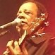
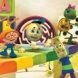

Gabriela Rocha
mais acessadas
- Aleluia (Hallelujah) violãoguitarraGuitarPropartiturasbaixocavacotecladobateriagaita
- Atos 2 violãoguitarraGuitarPropartiturasbaixocavacotecladobateriagaita
- Teu Santo Nome violãoguitarraGuitarPropartiturasbaixocavacotecladobateriagaita
- Creio Que Tu És a Cura violãoguitarraGuitarPropartiturasbaixocavacotecladobateriagaita
- Pra Onde Iremos? violãoguitarraGuitarPropartiturasbaixocavacotecladobateriagaita
- Nossa Canção violãoguitarraGuitarPropartiturasbaixocavacotecladobateriagaita
- Eu Sou Teu (Rooftops) violãoguitarraGuitarPropartiturasbaixocavacotecladobateriagaita
- Atos 2 Corrigida violãoguitarraGuitarPropartiturasbaixocavacotecladobateriagaita
- Creio Em Ti violãoguitarraGuitarPropartiturasbaixocavacotecladobateriagaita
- Me Aproximou violãoguitarraGuitarPropartiturasbaixocavacotecladobateriagaita
todas as músicas
- A
- A Voz violãoguitarraGuitarPropartiturasbaixocavacotecladobateriagaita
- Abandonada violãoguitarraGuitarPropartiturasbaixocavacotecladobateriagaita
- Aclame Ao Senhor violãoguitarraGuitarPropartiturasbaixocavacotecladobateriagaita
- Aleluia violãoguitarraGuitarPropartiturasbaixocavacotecladobateriagaita
- Aleluia (Hallelujah) violãoguitarraGuitarPropartiturasbaixocavacotecladobateriagaita
- Aleluia Porque a Luta Continua violãoguitarraGuitarPropartiturasbaixocavacotecladobateriagaita
- Atos 2 violãoguitarraGuitarPropartiturasbaixocavacotecladobateriagaita
- Atos 2 Corrigida violãoguitarraGuitarPropartiturasbaixocavacotecladobateriagaita
- C
- Conversa de Filho violãoguitarraGuitarPropartiturasbaixocavacotecladobateriagaita
- Creio Em Ti violãoguitarraGuitarPropartiturasbaixocavacotecladobateriagaita
- Creio Em Ti ( Still Believe) violãoguitarraGuitarPropartiturasbaixocavacotecladobateriagaita
- Creio Que Tu És a Cura violãoguitarraGuitarPropartiturasbaixocavacotecladobateriagaita
- Cuida de Mim violãoguitarraGuitarPropartiturasbaixocavacotecladobateriagaita
- D
- Desperta (Wake) violãoguitarraGuitarPropartiturasbaixocavacotecladobateriagaita
- E
- Estás Comigo violãoguitarraGuitarPropartiturasbaixocavacotecladobateriagaita
- Eterno Deus violãoguitarraGuitarPropartiturasbaixocavacotecladobateriagaita
- Eterno Deus violãoguitarraGuitarPropartiturasbaixocavacotecladobateriagaita
- Eu Me Rendo violãoguitarraGuitarPropartiturasbaixocavacotecladobateriagaita
- Eu Sou Teu violãoguitarraGuitarPropartiturasbaixocavacotecladobateriagaita
- Eu Sou Teu (Rooftops) violãoguitarraGuitarPropartiturasbaixocavacotecladobateriagaita
- G
- Gratidão violãoguitarraGuitarPropartiturasbaixocavacotecladobateriagaita
- H
- Hallelujah violãoguitarraGuitarPropartiturasbaixocavacotecladobateriagaita
- I
- Imenso Amor violãoguitarraGuitarPropartiturasbaixocavacotecladobateriagaita
- J
- Jesus violãoguitarraGuitarPropartiturasbaixocavacotecladobateriagaita
- M
- Me Aproximou violãoguitarraGuitarPropartiturasbaixocavacotecladobateriagaita
- Meu Lugar violãoguitarraGuitarPropartiturasbaixocavacotecladobateriagaita
- Meu Salvador violãoguitarraGuitarPropartiturasbaixocavacotecladobateriagaita
- Morreu Na Cruz violãoguitarraGuitarPropartiturasbaixocavacotecladobateriagaita
- N
- Nada Além de Ti violãoguitarraGuitarPropartiturasbaixocavacotecladobateriagaita
- Não Há Nada Mais Doce violãoguitarraGuitarPropartiturasbaixocavacotecladobateriagaita
- Não Vou Desistir violãoguitarraGuitarPropartiturasbaixocavacotecladobateriagaita
- Nossa Canção violãoguitarraGuitarPropartiturasbaixocavacotecladobateriagaita
- P
- Pra Onde Iremos? violãoguitarraGuitarPropartiturasbaixocavacotecladobateriagaita
- R
- Reconhecemos violãoguitarraGuitarPropartiturasbaixocavacotecladobateriagaita
- Reconhecemos violãoguitarraGuitarPropartiturasbaixocavacotecladobateriagaita
- T
- Teu Santo Nome violãoguitarraGuitarPropartiturasbaixocavacotecladobateriagaita
- U
- Unção de Deus violãoguitarraGuitarPropartiturasbaixocavacotecladobateriagaita
- V
- Viver Pra Ti Jesus violãoguitarraGuitarPropartiturasbaixocavacotecladobateriagaita
- Vou Te Adorar violãoguitarraGuitarPropartiturasbaixocavacotecladobateriagaita
artistas relacionados
- Leonardo Gonçalves
- Daniela Araújo
- Livres Para Adorar
- Nívea Soares
- Davi Sacer
- Fernandinho
- Mariana Valadão
- Gabriela Rocha e Elias dos Santos
- André Valadão
- Paulo César Baruk
- Heloísa Rosa
- Priscilla Alcântara
- Fernanda Brum
- Aline Barros
- Diante do Trono
- Danielle Cristina
- Thalita Pertuzatti
- Eyshila
- CTMDT
- Jotta A
- Shirley Carvalho
- Cristina Mel
- Eli Soares
- Anderson Freire
- Michelle Nascimento
- Renascer Praise
- Os Arrais
- Jozyanne
- Fernanda Brum e Eyshila
- Ludmila Ferber
- Clamor pelas Nações
- Jairo Bonfim
- Trazendo a Arca
- Ton Carfi
- Rafael Augusto
- Ana Nóbrega
- Sérgio SAAS
- David Quinlan
- Dany Grace
 Thalles Roberto
Thalles Roberto- Toque No Altar
- Brenda
- Bruna Karla
- Soraya Moraes
- Arianne
- Coral Kemuel
- Diego Natan
- Léa Mendonça
- Gisele Nascimento
- Renato Vianna
- Wilian Nascimento
- Elyssa Gomes
- Preto No Branco
- Marquinhos Gomes
- Raiz Coral
- Ministério Sarando a Terra Ferida
- Rafael Bernardo
- Gui Rebustini
- Jamily
- Filhos do Homem
- Melk Villar
- Raquel Mello
- Quatro Por Um
- Ministério Ipiranga
- Damares
 Rachel Malafaia
Rachel Malafaia- Alda Célia
 Henrique Cerqueira
Henrique Cerqueira- Ministério Zoe
- Alex e Alex
- Palavrantiga
- Thais Bonizzi
- Marcela Taís
- Shirley Carvalhaes
- Vineyard Music Brasil
- Cassiane
- André Leonno
- Liz Lanne
- Marcus Salles
- Ministerio Trazendo a Arca
- Rose Nascimento
- Lucas Souza
- Elaine de Jesus
- Banda Giom
- Ana Paula Valadão
- Adhemar de Campos
- Crianças Diante do Trono
- PG
- Igreja Batista Nova Jerusalém
- Gateway Worship
- Kleber Lucas
- Oficina G3
- Marina de Oliveira
- Santa Geração
- Além do Véu
- Rodolfo Abrantes
- Perlla
- Samuel Mizrahy
- Rodrigo Soeiro
- Rachel Novaes
- Robinson Monteiro
- Brenda Dos Santos
- Bêtania Lima
Comentários 11
- anartyx: Em 16/03/2015 14:37
muito bom
- izadoradelima: Em 12/01/2015 18:05
A música "A Voz" do álbum novo da Gabi, Pra Onde Iremos? Teria como disponibilizar a cifra? Obggg =)
- marinamelcia: Em 20/01/2015 14:31
Esse louvor é dos Arrais, não da Gabi, na page deles terá!
- marinamelcia: Em 20/01/2015 14:31
- Nathália: Em 31/08/2014 14:41
Tem como colocar a cifra do hino #NossaCanção (Novo cd)?? ;)
- Deborah: Em 10/08/2014 18:04
Gente tem como vcs colocarem a cifra da nova música dela #praondeiremos
- Danillo: Em 30/12/2014 21:34
Base: F# Bbm D#m B
Variação em: G#m7 A#m7 C4 C
- Danillo: Em 30/12/2014 21:34
- Diogo: Em 11/01/2014 18:34
linda como semper né gabi
- Negan: Em 13/02/2013 12:58
Cade a cifra da Musica Morreu na Cruz da Gabriela Rocha
- alessandro.pereira.359778: Em 07/10/2013 19:32
número 12
- alessandro.pereira.359778: Em 07/10/2013 19:32
- hosanafernandes: Em 31/12/2012 17:26
você sempre linda .
Te amo gabii S2
 Vivian
Vivian